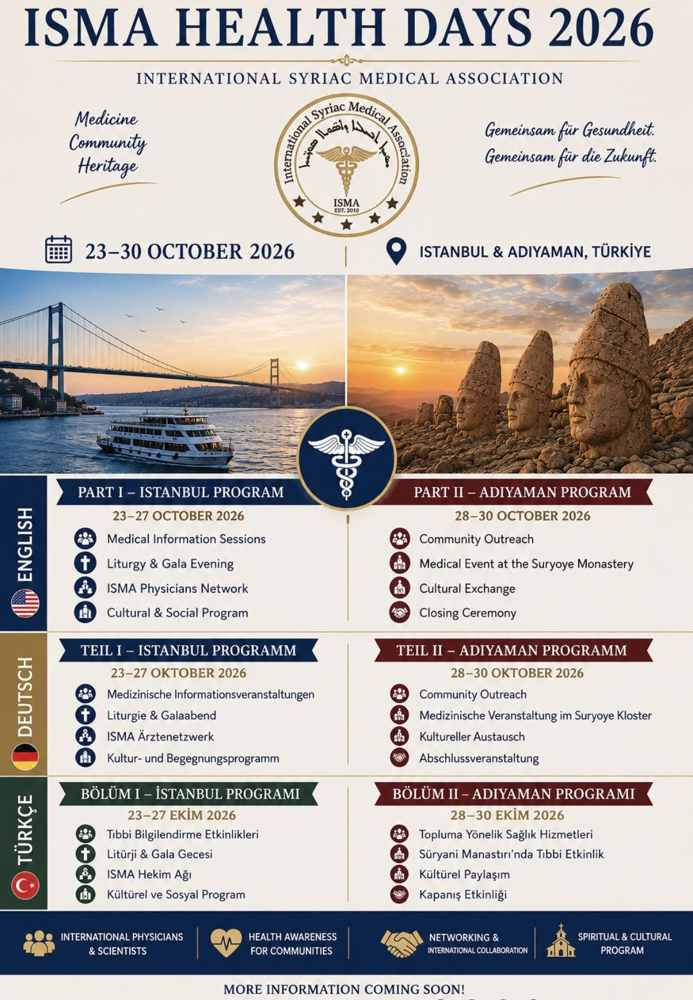

01
ܫܘܬܦܘܬܐ
ܡܚܒܪ ܠܐܣܘܬܘܬܐ ܣܘܪܝܝܬܐ ܘܡܩܝܡ ܫܘܬܦܘܬܐ ܥܠܡܝܬܐ.
ܫܘܬܦܘܬܐ، ܝܘܠܦܢܐ، ܝܕܥܬܐ ܘܥܕܪܢܘܬܐ.

ܝܘܡ̈ܐ ܚܝܠܬܢܝ̈ܐ ܕ-ISMA 2026 ܡܟܢܫܝܢ ܐܣܩܘܦ̈ܐ ܘܡܗܢܝ̈ܐ ܕܪܦܘܝܘܬܐ ܠܡܘܫܒ̈ܐ ܡܕܥܝ̈ܐ، ܫܘܬܦܘܬܐ، ܥܕܪܢܘܬܐ ܠܥܡܐ ܘܫܘܚܠܦܐ ܩܘܡܝܐ.
ܡܚܒܪ ܠܐܣܘܬܘܬܐ ܣܘܪܝܝܬܐ ܘܡܩܝܡ ܫܘܬܦܘܬܐ ܥܠܡܝܬܐ.
ܡܥܕܪ ܠܝܘܠܦܢܐ ܛܒܝܒܝܐ ܘܠܫܘܬܦܘܬܐ ܕܝܕܥܬܐ.
ܡܥܕܪ ܠܐܢܫ̈ܐ ܕܣܢܝܩܝܢ ܥܠ ܥܕܪܢܘܬܐ ܛܒܝܒܬܐ.
ܕܘܟܬܐ ܠܫܘܐܠ̈ܐ ܐܬܝܩܝܬܐ ܘܪܘܚܢܝܬܐ.